| Culoz | ||
|
get off the train at Culoz - cross over the footbridge and exit the station 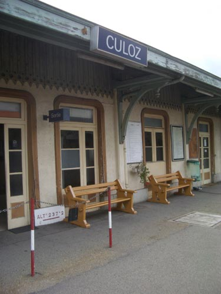 cross the road and head up into Culoz village 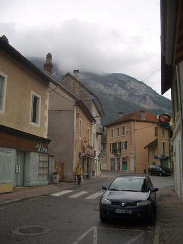 after you pass the marie you'll get to a junction - keep to your left - after a short distance you'll see on the other side of the road a small car park with some stairs leading up to some terraces - cross the road and climb the stairs 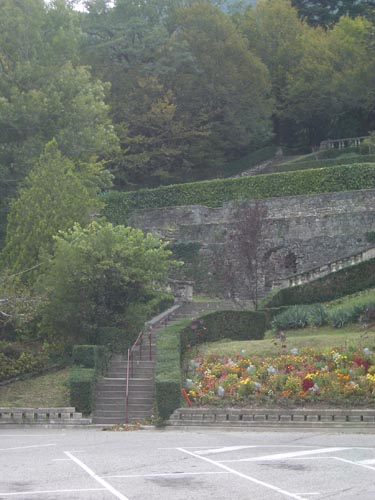 on the first terrace is a small bust of Gertrude Stein - the inscriptions read: GERTRUDE STEIN 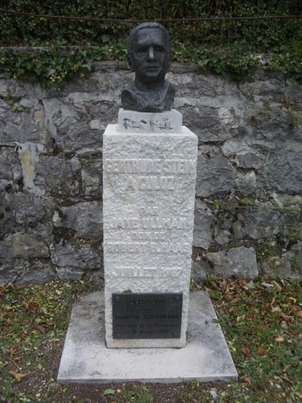 continue on up the steps until you come out at the top on the edge of a lawn - at the other end of the lawn is 11 - Maison Poncet Au fil du Jourdan 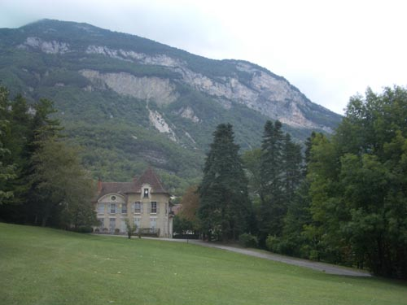 cross the lawn to the house - there on the left - is that the terrace she weeded waiting for the Americans to come 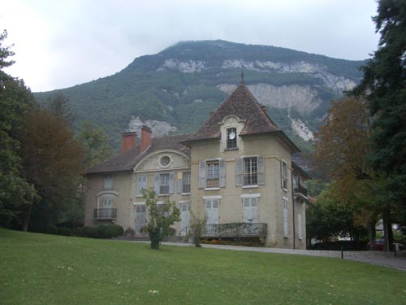 the weather vane looks a little like a rose 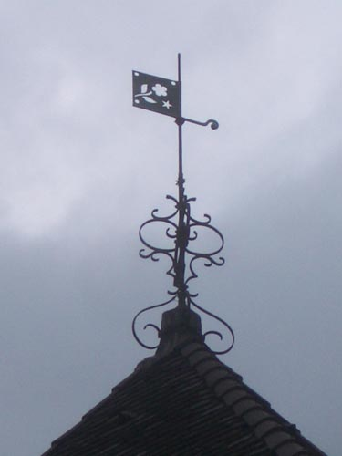 go around the house to the right and exit by the gate 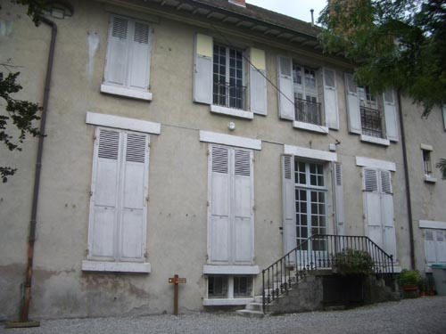 this gate has a couple of ironies to savour first is the letter box of the Culoz Basket Club on the left as you go out - not as you might think anything to do with poodles - the basket here is basketball 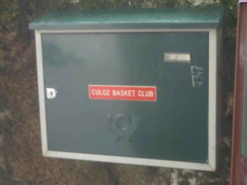 because - as it turns out - poodles now are interdit 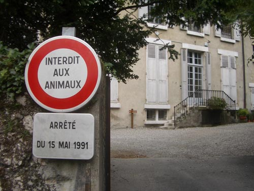 pause briefly on the little bridge immediately outside the gate to look at the stream - anyone who lived here must have done the same at some time - maybe waiting for a friend to get ready to go out 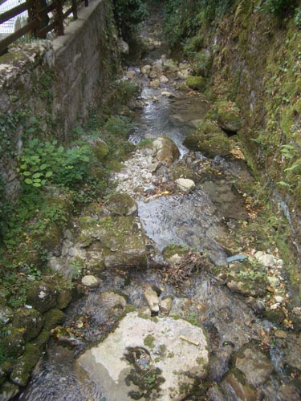 turn left when you join the road in front of the gate and get ready to climb the hill once again we are looking for where Gertrude Stein walked the dog 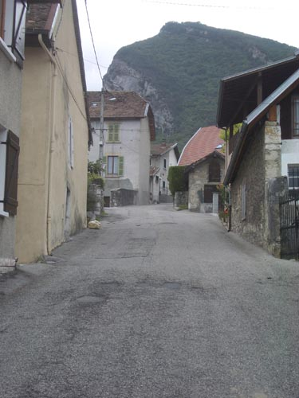 and indeed here we know she did - we have the proof 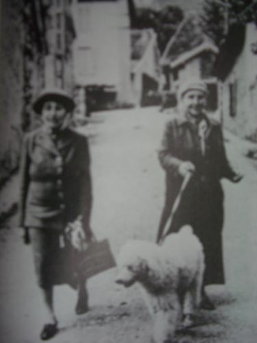 as you climb the hill keep to the right at the junctions - it's quite a view up here - click on the image to see the full panorama walk up the hill until you tire - then turn back and go back down through Culoz 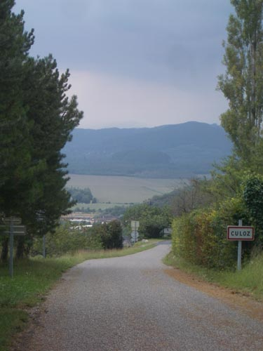 past the mural to H. & L. Serpollet, Precurseurs de L'Automobile, 1858 – 1907 opposite the church - back down the same road we came on to the train station 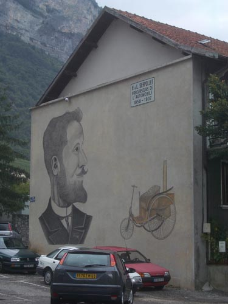 |
||
{kind=link}